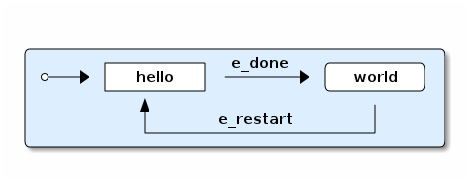
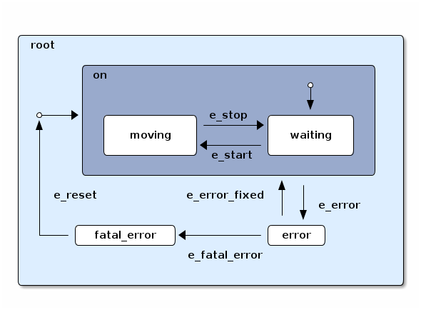

The rFSM Statecharts (v1.0-beta2)
Table of Contents
1 Overview
rFSM is a small yet powerful Statechart implementation. It is mainly designed for Coordinating complex systems but is not limited to that. rFSM is written purely in Lua and is thus highly portable and embeddable. As a Lua domain specific language rFSM inherits the extensibility of its host language.
rFSM is dual licensed under LGPL/BSD.
This README is also available in HTML and Text format in the doc/ subdirectory.
2 Setup
Make sure the rFSM folder is in your LUA_PATH. For example:
export LUA_PATH=";;;/home/mk/src/git/rfsm/?.lua"
3 Quickstart
- define an rfsm state machine (see
examples/hello_world.lua) - define a context script to execute it (see
examples/runscript.lua) - run it
lua examples/runscript.lua INFO: created undeclared connector root.initial hello world hello world
4 Introduction
rFSM is a minimal Statechart variant designed for Coordinating complex systems such as robots. It is written purely in Lua and is thus highly portable and embeddable. Being a Lua domain specific language, rFSM inherits the easy extensibility of its host language.
The following shows a simple hello_world example

1: return rfsm.composite_state { 2: hello = rfsm.simple_state { exit=function() print("hello") end }, 3: world = rfsm.simple_state { entry=function() print("world") end }, 4: 5: rfsm.transition { src='initial', tgt='hello' }, 6: rfsm.transition { src='hello', tgt='world', events={ 'e_done' } }, 7: rfsm.transition { src='world', tgt='hello', events={ 'e_restart' } }, 8: }
The first line defines a new toplevel composite state and returns it. By always returning the fsm as the last statement in an rfsm file, it can be very easily read by tools or other state machines.
The second and third line define two simple states which are part of
the toplevel composite state. hello defines an exit function and
world an entry function which are called when the state is
exited/entered resp.
The next three lines define transition between these states. The first is from the initial connector to the hello state. This transition will be taken the first time the state machine is entered. The initial connector, as an exception, need not be defined and will be created automatically.
The next transition is from hello to world and is triggered by the
e_done event. This event is raised internally when the a state
completes, which is either the case when the states "doo" function
(see below) finishes or immediately if there is no doo, as is the
case here. The third transition is triggered by the e_restart
event.
Next we execute this statemachine in the rfsm-simulator:
PMA-10-048 ~/prog/lua/rfsm(master) $ tools/rfsm-sim examples/hello_world.lua Lua 5.1.4 Copyright (C) 1994-2008 Lua.org, PUC-Rio rFSM simulator v0.1, type 'help()' to list available commands INFO: created undeclared connector root.initial > step() hello active: root.hello(done) queue: e_done@root.hello
We execute step() to advance the state machine once. As this is
the first step, the fsm is entered via the 'initial' connector to
the hello state. After that hello is active and done (because no
doo function is defined). Consequently an e_done completion event
has been generated which is in the queue. So the next step…
> step()
world
active: root.world(done)
queue: e_done@root.world
… causes a transtion to done. As the 'world' state completion
event does not trigger any transitons, running step() again does
not cause any changes:
> step()
active: root.world(done)
queue:
But we can manually send in the e_restart event and call step(),
which takes us back to hello:
> se("e_restart") > step() hello active: root.hello(done) queue: e_done@root.hello
5 API
5.1 Model entities
| Function | short alias | description |
|---|---|---|
simple_state{} | sista{} | create a simple state |
composite_state{} | csta{} | create a composite state |
connector{} | conn{} | create a connector |
transition{} | trans{} | create a transition |
(these functions are part of the rfsm module, thus can be called
in Lua with rfsm.simple_state{})
- states
States are either of type
simple_stateorcomposite_stateand may define the following programs:entry(fsm, state, 'entry') exit(fsm, state, 'exit')
which are called when the state is entered exited or exited respectively. The argument passed in are the toplevel statechart, the current state and the string 'entry' resp. 'exit'. (The rationale behind the third argument is to allow one function to handle entry and exit and thus to be able to identify which one is being called.)
Simple states may additionaly define a do function (it is called
dooin to avoid clashes with the identically named Lua keyword).bool doo(fsm, state, 'doo')This function is treated as a Lua coroutine. This means if it is a function it will be excuted and a completion event
e_doneraised afterwards. In case there is an event which triggers an outgoing transition it will not be run and that transition will be taken instead.In many cases this function shall run for a longer period until some event occurs. To allow the rFSM core to check for events in between and possibly execute a transition, the doo function must give up control. This can be done by calling
rfsm.yield()(Note: this currently only an alias to
coroutine.yield)The following example illustrates this:
doo = function(fsm) while true do if min_distance() < 0.1 then rfsm.send_events(fsm, "e_close_obj") end rfsm.yield() end end
This
doowill check a certain condition repeadedly and raise an event if it is true. After that control is returned to the rFSM core.An boolen idle flag can be return to the rFSM core by passing it as a parameter to
rfsm.yield. If this flag is true then it will cause the rfsm core to go idle if there are no other events. Otherwise, if no value or false is returned and there are no other events, doo will be called in a tight loop. - connector:
connectorConnectors allow to define so called compound transitions by chaining multiple transition segments together. Connectors are similar to the UML junction element and are statically checked. This means for a compound transition to be executed the events specified on all transitions must match the current set of events and the guards of all transitions must be true.
See the examples
connector_simple.luaandconnector_split.luaConnectors are useful for defining common entry points which are later dispatched to various internal states.
Note: defining cycles is possible, but dangerous, unsupported and discouraged.
- transitions:
transitionsTransitions define how the state machine changes states when events occur:
example:
rfsm.transition{ src='stateX', tgt='stateY', events = {"e1", "e2" }, effect=function () do_this() end }This defines a transition between stateX and stateY which is triggered by e1 and e2 and which will execute the given effect function when transitioning.
Three ways of specifying src and target states are supported: local, relative or absolute. In the above example 'stateX' and 'stateY' are referenced locally and must therefore be defined within the same composite state as this transition.
Relative references specify states which are, relative to the position of the transition, deeper nested. Such a reference starts with a leading dot. For example:
return rfsm.csta{ operational=rfsm.csta{ motors_on = rfsm.csta{ moving = rfsm.sista{}, stopped = rfsm.sista{}, }, }, off=rfsm.sista{}, rfsm.trans{src='initial', tgt=".operational.motors_on.moving"} }
This transition is defined between the (locally referenced) 'initial' connector to the relatively referenced
movingstate.At last absolute references begin with "root." Using absolute syntax is strongly discouraged for anything other than testing, as it breaks compositionality: if a state machine is used within a larger statemachine the absolute reference is broken.
5.2 Operational API
| Function | description |
|---|---|
fsm rfsm.init(fsmmodel) | create an inialized rfsm instance from model |
idle rfsm.step(fsm, n) | attempt to transition FSM n times. Default: once |
rfsm.run(fsm) | run FSM until it goes idle |
rfsm.send_events(fsm, ...) | send one or more events to internal rfsm event queue |
The step will attempt to step the given initialized fsm for n
times. A step can either be a transition or a single execution of
the doo program. Step will return either when the state machine is
idle or the number of steps has been reached. The Boolean return
value is whether the fsm is idle or not.
Invoking run will call step as long as the fsm is not idle. Not idle
means: there are events in the queue or there is an active doo
function which is not idle.
5.3 Hook functions
The following hook functions can be defined for a toplevel composite state and allow to refine various behavior of the state machine.
| function | description |
|---|---|
dbg | called to output debug information. Set to false to disable. Default false. |
info | called to output informational messages. Set to false to disable. Default stdout |
warn | called to output warnings. Set to false to disable. Default stderr. |
err | called to output errors. Set to false to disable. Default stderr. |
table getevents() | function which returns a table of new events which have occurred |
dropevents(fsm, evtab) | function is called with events which are discarded |
step_hook(fsm) | is called for each step (mostly for debugging purposes) |
idle_hook(fsm) | called instead of returning from step/run functions |
The most important function is getevents. The purpose of this
function is return all events which occurred in a table. This allows
to integrate rFSM instances into any event driven environment.
6 Common pitfalls
- Name clashes between state/connector names with reserved Lua
keywords.
This can be worked around by using the following syntax:
['end'] = rfsm.sista{...} - Executing functions accidentially
It is a common mistake to execute externally defined functions instead of adding references to them:
stateX = rfsm.sista{ entry = my_func() }The (likely) mistake above is to execute my_func and assigning the result to entry instead of assigning my_func:
stateX = rfsm.sista{ entry = my_func }Of course the first example would be perfectly valid if my_func() returned a function as a result!
7 Tools
Some useful tools to be found in the tools/ directory.
rfsm-vizsimple tool which can generate images from state machines.to generate all possible formats run:
$ tools/rfsm-viz all examples/composite_nested.lua
generates various representations (in examples/)
rfsm-simsmall command line simulator for running a fsm interactively.
$ tools/rfsm-sim all examples/ball_tracker_scope.lua
It requires a image viewer which automatically updates once the file displayed changes. For example
evinceworks nicely.rfsm2jsonconverts an lua fsm to a json representation. Requires lua-json.rfsm-dbgexperimental. don't use.
8 Helper modules
fsm2uml.luamodule to generate UML like figures from rFSMfsm2tree.luamodule to generate the tree structure of an rFSM instancefsmpp.luaLowlevel function used to improve the debug output.fsmtesting.luastatemachine testing infrastructure.rfsm_rtt.luaUseful functions for using rFSM with OROCOS rttfsmdbg.luaa remote debugger interface which is simply still too experimental to be even documented.
9 More examples, tips and tricks
9.1 A more complete example
The graphical model:

… and the corresponding textual representation:
-- any rFSM is always contained in a composite_state return rfsm.composite_state { dbg = true, -- enable debugging on = rfsm.composite_state { entry = function () print("disabling brakes") end, exit = function () print("enabling brakes") end, moving = rfsm.simple_state { entry=function () print("starting to move") end, exit=function () print("stopping") end, }, waiting = rfsm.simple_state {}, -- define some transitions rfsm.trans{ src='initial', tgt='waiting' }, rfsm.trans{ src='waiting', tgt='moving', events={ 'e_start' } }, rfsm.trans{ src='moving', tgt='waiting', events={ 'e_stop' } }, }, error = rfsm.simple_state { doo = function (fsm) print ("Error detected - trying to fix") rfsm.yield() math.randomseed( os.time() ) rfsm.yield() if math.random(0,100) < 40 then print("unable to fix, raising e_fatal_error") rfsm.send_events(fsm, "e_fatal_error") else print("repair succeeded!") rfsm.send_events(fsm, "e_error_fixed") end end, }, fatal_error = rfsm.simple_state {}, rfsm.trans{ src='initial', tgt='on', effect=function () print("initalizing system") end }, rfsm.trans{ src='on', tgt='error', events={ 'e_error' } }, rfsm.trans{ src='error', tgt='on', events={ 'e_error_fixed' } }, rfsm.trans{ src='error', tgt='fatal_error', events={ 'e_fatal_error' } }, rfsm.trans{ src='fatal_error', tgt='initial', events={ 'e_reset' } }, }
9.2 How to compose state machines
This is easy! Let's assume the state machine is is a file
"subfsm.lua" and uses the strongly recommended return rfsm.csta ... syntax, it can be included as follows:
return rfsm.csta { name_of_composite_state = rfsm.load("subfsm.lua"), otherstateX = rfsm.sista{}, ... }
Make sure not to forget the ',' after the rfsm.load() statement!
10 Contact
Please direct questions, bugs or improvements to the orocos-users mailing list.
11 Acknowledgement
- Funding
The research leading to these results has received funding from the European Community's Seventh Framework Programme (FP7/2007-2013) under grant agreement no. FP7-ICT-231940-BRICS (Best Practice in Robotics)
- Scientific background
This work borrows many ideas from the Statecharts by David Harel and some from UML 2.1 State Machines. The following publications are the most relevant
David Harel and Amnon Naamad. 1996. The STATEMATE semantics of statecharts. ACM Trans. Softw. Eng. Methodol. 5, 4 (October 1996), 293-333. DOI=10.1145/235321.235322 http://doi.acm.org/10.1145/235321.235322
The OMG UML Specification: http://www.omg.org/spec/UML/2.3/Superstructure/PDF/
Org version 7.5 with Emacs version 23
Validate XHTML 1.0